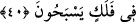
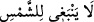
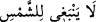
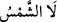

Gel, aynandaki şirk tozunu
Tevhid cilâsı ile temizle de pastan arınsın
Yine o şöyle demiştir:
Zuhur yeri ve mecaz aynası olmasaydı,
Hakikat cemali gerçekte nasıl âşikâr olabilirdi?
Gönlümüzde dosttan gayrısını arama, bulamazsın.
Mahmud’un gönlünde Ayaz’dan başkası yoktur
Aklın karşısında aşk hikâyelerini anlatma,
Çünkü aşka tutkun olmayan bunu kabul etmez
40. Ne güneş aya yetişebilir, ne de gece gündüzü geçebilir. Her biri bir yörüngede
yüzerler.
Yürüyüşünün hızında “Ne güneş aya yetişebilir,” bu güneş için sahih/mümkün ve
kolay değildir.
Bu ifade “__WORD__ ifadesinden daha beliğ ve kuvvetlidir. Burada nefiy harfi olan
“__WORD__”nın “__WORD__ şeklinde fiil ile değil “__WORD__ diye güneş kelimesi ile gelmesi
güneşin emre âmâde olduğuna, onun hakkında murâd edilen ve takdir edilenden
başkasını yapmasının mümkün olmadığına delâlet etmektedir.
Ay seyr olarak güneşten daha hızlıdır. Bir ayda feleğini/yörüngesini kat eder ve yirmi
sekiz menzilinde dolaşır. Güneş ise böyle değildir. Çünkü aydan daha yavaştır. Çünkü
feleğini/yörüngesini kat etmesi ve on iki burca ayrılan menzillerinde dolaşması ancak
bir senede olur. Güneş her menzilde on üç gün durur. Bu durumda seyrinin hızında aya
yetişemez. Allah Teâlâ güneşin seyrini ayın seyrinden daha yavaş, yedinci semanın
yıldızı olan Zühal’in seyrinden ise daha hızlı kılmıştır. Bunun sebebi güneşin ışığı
tamdır. Eğer seyri yavaş olsaydı uzun zaman bir şeyin karşısında durup onu yakardı.
Eğer seyri hızlı olsaydı bitkileri topraktan, yaprakları ve meyveleri ağaçlardan
çıkaracak kadar, meyveleri ve hububatı olgunlaştırıp kurutacak kadar bir yerde
durmamış olacaktı. Eğer güneş, seyrinin hızında aya yetişseydi bir ayda hem yaz hem kış
olurdu. Bu yüzden mevsimlerin hükümleri, bitkilerin oluşumu ve hayvanların geçimi
bozulurdu.
“Ne güneş aya yetişebilir” sözünün mânâsının şöyle olması da mümkündür: Güneşin
ışığı kuvvetli ve parlak olmakla birlikte tesirleri ve faydaları bakımından güneş aya